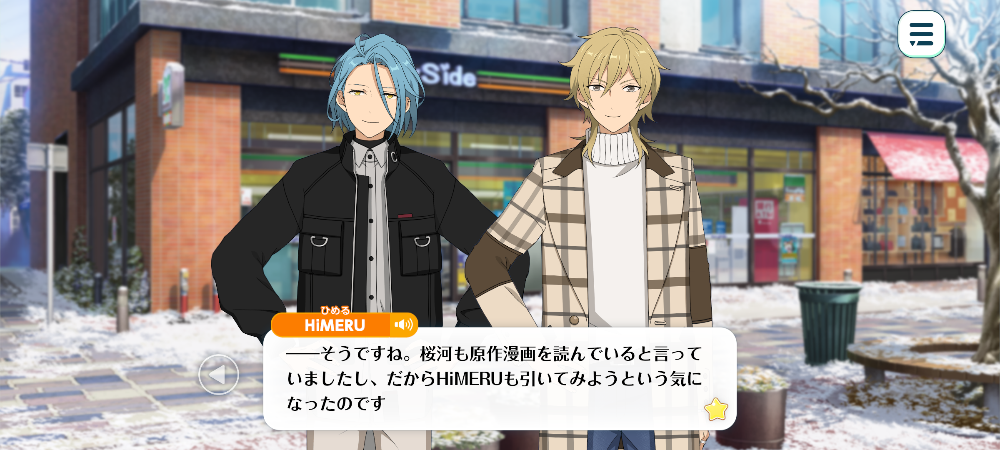
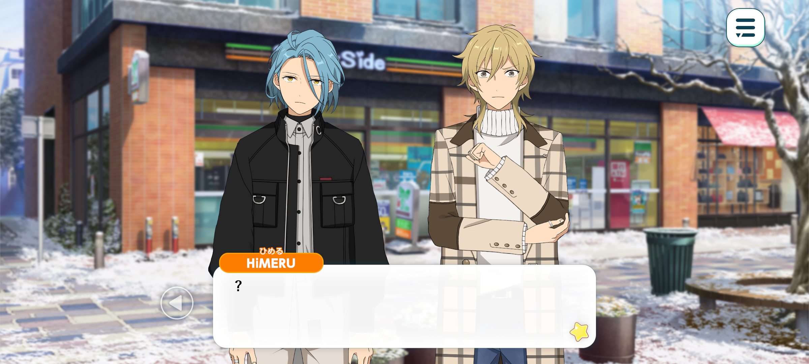
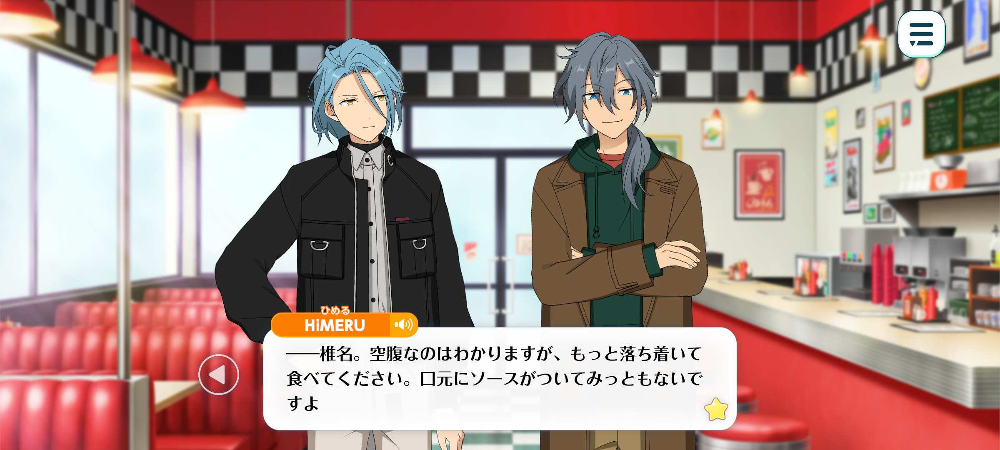

Scout! LUCKY SCRAMBLE
Fortunate Heartthrob – Chapter 6



Kaoru: But hey, that figure you won is from a series that's really popular around the dorms, isn't it? The younger ones are going to be all over you.
HiMERU: —Mhm. Oukawa mentioned that he'd been reading it too, which was what first piqued HiMERU's interest.
But this isn't how things were supposed to turn out. HiMERU would have been perfectly satisfied with whatever prize was available.
And what's more, HiMERU even paid in cash this time...
Rei: And the change you received was quite extraordinary, too! Exactly 777 yen ♪.
Kaoru: That's because HiMERU bought a lottery ticket as well as a tablet, remember~?
The shop assistant was practically staring in disbelief. Even the people waiting in line behind you couldn't help but applaud!
HiMERU: The shop assistant even exclaimed, "You're unbelievably lucky!"...
Kaoru: Guess it was their first time seeing something like that. Compared to HiMERU-kun, Rei-kun and I haven't had anything even remotely close to that kind of luck.
Rei: Umu. We took advantage of HiMERU-kun's winning streak and tried our luck as well, but all we came away with were the most pitiful of prizes.
By the way, you can have this coaster I won as a little present, HiMERU-kun. ♪
HiMERU: Ah, thank you...
Rei: Surely even HiMERU-kun must be beginning to realise just how fortunate he is by now. So why the long face?
HiMERU: …
—You can call it “good fortune” but HiMERU doesn’t agree.
At the shopping mall, HiMERU thought it would be impolite to walk ahead of his senpais, so HiMERU followed behind you.
Had we entered in a different order, one of you would have been the five-millionth visitor instead.
And at the lottery in the convenience store, HiMERU happened to pick the tickets from the bottom of the box...
It's entirely possible that the tickets hadn't been shuffled properly, and that the winning tickets, including the grand prize, had simply ended up together in one place.
Rei: You certainly are determined to attribute everything to mere probability. Perhaps 'composed' or 'obstinate' would be more fitting descriptions of you...
If that's how you intend to distance yourself from the reality of your good fortune, then allow me to pose a question, HiMERU-kun.
...When a series of coincidences occur, do they eventually become inevitable? Or is there truly no such thing as coincidence, and is everything in this world predetermined? What do you think?
HiMERU: —Beyond mere chance or inevitability, HiMERU believes there is always an element of fate and the unexpected involved in everything.
'HiMERU knew this would happen,' or 'This isn't how things were supposed to turn out'... HiMERU suspects that experiences such as these cannot be fully explained by chance or inevitability alone.
Kaoru: He's dodging the question~. Well, even if HiMERU-kun doesn't recognise his own good fortune, Rei-kun and I certainly do.
HiMERU: ...Anyway. It's already past lunchtime. What are the two of you thinking of having for—

Kaoru: Watch out!
HiMERU: ?
Kaoru: Are you alright? If you hadn't stopped to check the time, that bicycle would've hit you!
HiMERU: ...Is that so? HiMERU is relieved that no accident occurred.
What a coincidence that HiMERU just happened to check the time at that exact moment.
Rei: ...You could have been seriously injured, and yet you're still going to dismiss this as another coincidence?
From where we're standing, it looks as though a tremendous wave of good fortune is about to come crashing down upon you.
HiMERU: If such a wave is coming, HiMERU hopes it will simply drag him away already. HiMERU would rather this didn't continue any further.
Kaoru: Ahaha! Are you getting tired of having your good fortune paraded around like this?
It really does seem as though good luck follows HiMERU-kun wherever he goes.
Rei: Now that sounds like a proverb! 'Where HiMERU-kun walks, good fortune follows...' ♪
HiMERU: Please, enough. This so-called good fortune... No, surely all of this is happening simply because we're choosing to interpret it that way.
Besides, if the good fortune HiMERU actually wishes for were to come his way, surely he would be happy about it...
Until now, it has all felt like we're simply reading too much into what's happening to—
Gah!?
Rei: !?
Kaoru: !?
Rei: W-what’s wrong?
HiMERU: Something suddenly grabbed at HiMERU's feet... No, rather, it felt as though something was clinging to him...!
(HiMERU knows he said he wanted to be dragged away already, but this is a rather quick turn around…!)
Niki: ..., elp.
HiMERU: ...?
Niki: H-HiMERU-kun… Please… help me…
HiMERU: Shiina…!?
Niki: Thud hngnn~...
HiMERU: Shiina, pull yourself together! Shiina…!

Niki: Yumyumyum…(Swallows loudly)!
Munch munch munch (Swallows loudly again)! Nomnomnom…!
HiMERU: —Shiina. HiMERU understands that you're hungry, but please take your time and eat properly. You've got sauce all around your mouth. It's rather unsightly.
Niki: Okaaay! I'll take the advice of the person who saved my life to heart!
Cccrunchhh… (Chews slowly)
HiMERU: —Now you're just exaggerating it. And HiMERU doesn't think you should throw around the phrase 'saved your life' so lightly.
Niki: …Gulp. Nope, I’m not exaggerating, and I don't mean it lightly.
If HiMERU-kun hadn't found me, and hadn't treated me to this meal...
I would've been in pretty bad shape by now.